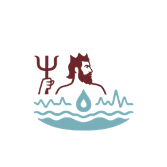
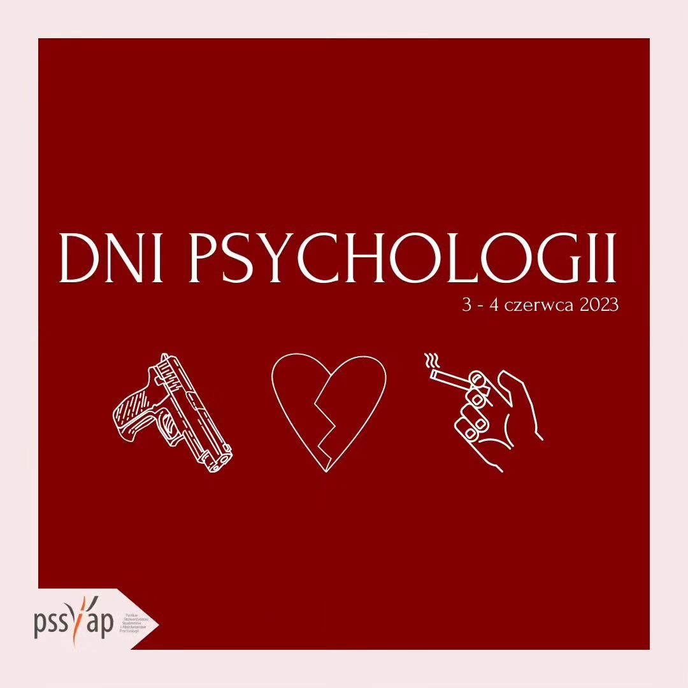

Publications

Online interactions and their potential to strengthen social polarization
The aim of this work was to examine the potential of online interactions to strengthen social polarization.

‘We are looking for people like you’ – new technique of social influence
A low response rate in surveys makes the research more expensive and time consuming, but it also, or even more importantly, constitutes a major methodological problem. Therefore, researchers use all kinds of measures in order to increase the response rate. This article describes four experiments.
Online interactions and their potential to strengthen social polarization
The aim of this work was to examine the potential of online interactions to strengthen social polarization.
Media multitasking, narcissism, and social anxiety
The aim of this work was to examine whether media multitasking is related to social anxiety and narcissism. The study involved students (N = 408).

Media multitasking, narcissism, and social anxiety among students
The aim of this work was to examine whether media multitasking is related to social anxiety and narcissism. The study involved students (N = 408), who completed three questionnaires in random order: a media multitasking questionnaire, the Liebowitz Social Anxiety Scale, and the NPI narcissism questionnaire.

Technoromance - How Technology Influences Our Relationships
During the 2023 Psychology Days Conference "Romances, Crimes, and Addictions," I presented an overview of research on the influence of technology on human relationships.